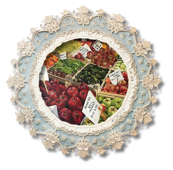

[35] I have always been a teller of stories. When I was a young girl, my mother carried me out of a grocery store as I screamed about toes in the produce aisle. Concerned women turned and watched as I kicked the air and pounded my mother’s slender back.
[36] “Potatoes!” she corrected when we got back to the house. “Not toes!”
[37] She told me to sit in my chair – a child-sized thing, only built for me – until my father returned. But no, I had seen the toes, pale and bloody stumps, mixed in among those russet tubers. One of them, the one that I had poked with the tip of my index finger, was cold as ice, and yielded beneath my touch the way a blister did. When I repeated this detail to my mother, the liquid of her eyes shifted quick as a startled cat.
[38] “You stay right there,” she said.
[39] My father returned from work that evening and listened to my story, each detail.
[40] “You’ve met Mr. Barns, have you not?” he asked me, referring to the elderly man who ran this particular market.
[41] I had met him once, and I said so. He had hair white as a sky before snow, and a wife who drew the signs for the store windows.
[42] “Why would Mr. Barns sell toes?” my father asked. “Where would he get them?”
[43] Being young, and having no understanding of graveyards or mortuaries, I could not answer.
[44] “And even if he got them somewhere,” my father continued, “what would he have to gain by selling them among the potatoes?”
[45] They had been there. I had seen them with my own eyes. But beneath the sunbeams of my father’s logic, I felt my doubt unfurling.
[46] “Most importantly,” my father said, arriving triumphantly at his final piece of evidence, “why did no one notice the toes except for you?”
[47] As a grown woman, I would have said to my father that there are true things in this world only observed by a single set of eyes. As a girl, I consented to his account of the story, and laughed when he scooped me from the chair to kiss me and send me on my way.
This legend drawn from the girl’s very own early experience highlights silencing as a form of oppression, preventing women from telling their stories in their whole, raw truth (Houston and Kramarae, 387-399). From this specific legend, the reason why the girl keeps the urban legends to herself can be seen. It is noticeable that there is no mention of her telling her husband the stories she tells to the auditor. It is almost like she trusts the auditor, the readers, more than her husband. It is because a man, her very own father, had dismissed a significant story of hers before.